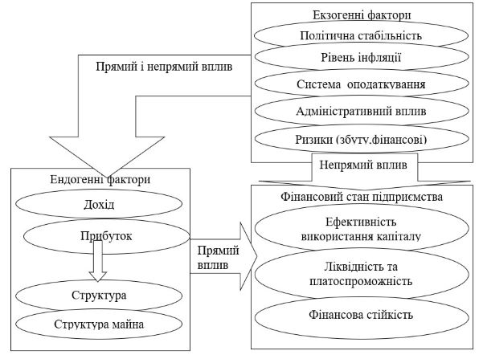

План
1. Необхідність і значення оцінки фінансового стану.
2. Показники оцінки фінансового стану підприємства.
1. Необхідність і значення оцінки фінансового стану
У сучасних умовах кожне підприємство повинно чітко орієнтуватись у складному лабіринті ринкових відносин, правильно оцінювати виробничий та економічний потенціал, стратегію подальшого розвитку, фінансовий стан як свого підприємства, так і підприємств-партнерів.
Під фінансовим станом підприємства розуміють ступінь забезпеченості підприємства необхідними фінансовими ресурсами для здійснення ефективної господарської діяльності та своєчасного проведення господарської діяльності та своєчасного проведення грошових розрахунків за своїми зобов’язаннями.
Фінансовий стан підприємств залежить від результатів його виробничої, комерційної та фінансово-господарської діяльності. Тому на нього впливають усі ці види діяльності підприємства. Передовсім на фінансовому стані підприємства позитивно позначаються безперебійний випуск і реалізація високоякісної продукції.
Як правило, що вищі показники обсягу виробництва і реалізації продукції, робіт, послуг і нижча їх собівартість, то вища прибутковість підприємства, що позитивно впливає на його фінансовий стан.
Неритмічність виробничих процесів, погіршання якості продукції, труднощі з її реалізацією призводять до зменшення надходження коштів на рахунки підприємства, в результаті чого погіршується його платоспроможність.
Існує і зворотний зв’язок, оскільки брак коштів може призвести до перебоїв у забезпеченні матеріальними ресурсами, а отже у виробничому процесі.
Фінансова діяльність підприємства має бути спрямована на забезпечення систематичного надходження й ефективного використання фінансових ресурсів, дотримання розрахункової і кредитної дисципліни, досягнення раціонального співвідношення власних і залучених коштів, фінансової стійкості з метою ефективного функціонування підприємства.
Саме цим зумовлюється необхідність і практична значущість систематичної оцінки фінансового стану підприємства, якій належить суттєва роль у забезпеченні його стабільного фінансового стану.
Фінансовий аналіз (від грецьк. розклад, розчленування) - це метод оцінювання і прогнозування фінансового стану підприємства. Як метод дослідження аналіз полягає в розчленуванні цілого на складові. Протилежне поняття - синтез (від грецьк. з’єднання, складання) - це метод вивчення предмета в цілісності, єдності та взаємозв’язку його частин. Зв’язок “аналіз- синтез» притаманний будь-якому науковому дослідженню. Особливе значення він має в економічних дослідженнях як на макро-, так і на мікрорівні.
Мета фінансового аналізу - інформаційне забезпечування прийняття рішень, на які істотно впливають фактичні або прогнозні дані про фінансовий стан підприємства. Ідеться про отримання відносно невеликої кількості ключових, найінформативніших параметрів, що об’єктивно, всебічно характеризують фінансовий стан підприємства (платоспроможність, фінансову стійкість, незалежність, рентабельність діяльності, імовірність банкрутства тощо).
Метою оцінки фінансового стану підприємства є пошук резервів підвищення рентабельності виробництва і зміцнення комерційного розрахунку як основи стабільної роботи підприємства і виконання ним перед бюджетом, банком і іншими установами.
Оцінювання фінансового стану підприємства становить інтерес для широкого кола суб’єктів ринку:
- підприємства, яке хоче знати неупереджену думку про свою діяльність і розробити заходи щодо її поліпшення;
- акціонерів, що вклали свої кошти у власний капітал підприємства, цікавить стабільність його фінансового стану і прогнози стабільності на майбутнє. Окрім того, їх цікавить рентабельність підприємницької діяльності та політика керівництва щодо виплати дивідендів;
- інвесторів, зацікавлених в ефективності та прийнятній ризикованості інвестування своїх коштів;
- кредиторів і постачальників, які бажають впевнитись у платоспроможності підприємства;
- партнерів по бізнесу, які прагнуть встановити з підприємством стабільні і надійні ділові відносини (постачальники, споживачі, транспортувальники, страхові компанії та ін.);
- сторонніх щодо підприємства структур (так, Державна податкова адміністрація бажає впевнитись у спроможності підприємства сплачувати податки, профспілки – у стабільності зайнятості працівників і здатності своєчасно виплачувати заробітну плату, благодійні організації - у потенційній спроможності підприємства допомагати).
Таким чином, перелік перерахованих груп користувачів фінансового аналізу показує, що він потрібний всім учасникам економічного процесу.
Фінансовий стан підприємства - це комплексне поняття, яке є результатом взаємодії всіх елементів системи фінансових відносин підприємства, визначається сукупністю виробничо-господарських факторів і характеризується системою показників, що відображають наявність, розміщення і використання фінансових ресурсів.
Аналіз основних фінансово-економічних показників діяльності підприємства проводиться завдяки даним фінансової звітності Форми № 1 «Баланс (Звіт про фінансовий стан)» і № 2 «Звіт про фінансові результати (Звіт про сукупний дохід)». Аналіз здійснюють методом горизонтально-вертикального аналізу, суть якого полягає в порівнянні кожної позиції звітності з відповідним показником за попередній період та визначенні відхилення в абсолютній та відносній величинах.
Аналіз фінансового стану підприємства починається зі загальної його оцінки на звітну дату порівняно з базовим і минулим періодами за показниками, які характеризують:
- забезпечення підприємства власним капіталом;
- раціональність розміщення власного капіталу;
- ефективність використання (власного капіталу; власного оборотного капіталу; сукупного капіталу);
- фондовіддачу і рентабельність активів підприємства.
Аналіз і загальна оцінка фінансового стану підприємства проводиться з метою операційного реагування і прийняття управлінських рішень, скерованих на зміцнення фінансового стану, забезпечення фінансової стабільності.
Фінансовий стан підприємства є дуже містким поняттям. Для його характеристики у економічній літературі досить часто застосовуються такі критерії, як:
- фінансова стійкість підприємства - такий стан його фінансових ресурсів, їх розподіл та використання, який забезпечує розвиток підприємства на основі зростання прибутку та капіталу при збереженні платоспроможності та кредитоспроможності в умовах допустимого ризику;
- платоспроможність - здатність підприємства розраховуватися за своїми зобов'язаннями;
- кредитоспроможність - здатність до отримання кредитів та їх своєчасного погашення за рахунок власних коштів та інших фінансових ресурсів;
- прибутковість роботи підприємства;
- оптимальність з точки зору економічного становища підприємства розподілу прибутку, що залишається в його розпорядженні після сплати податків і обов'язкових відрахувань;
- раціональне розміщення основних і оборотних коштів (власних і позикових), перш за все, недопущення відволікання грошей у запаси непотрібного підприємству устаткування, яке довгий час не монтується і не використовується, наднормативні запаси товарно-матеріальних цінностей, витрат виробництва у дебіторську заборгованість, інші позапланові й непродуктивні витрати;
- наявність власних фінансових ресурсів (основних і оборотних коштів) не нижче мінімального необхідного рівня для організації виробничого процесу і процесу реалізації продукції;
- ліквідність балансу - ступінь покриття зобов'язань підприємства такими активами, строк перетворення яких у грошові кошти відповідає строку погашення зобов'язань.
Фінансовому стану підприємства притаманні внутрішні протиріччя, пов'язані з найбільш ефективним розміщенням власних і позикових фінансових ресурсів для отримання максимального прибутку. Так, для забезпечення певного рівня фінансової незалежності підприємству необхідно мати достатній обсяг власного капіталу, за рахунок якого фінансуються необоротні та частина оборотних активів, що призводить до скорочення платоспроможності та зменшення рівня ліквідності. Збільшити рівень ліквідності можна шляхом вкладення фінансових ресурсів у абсолютно ліквідні активи, що негативно впливає на ефективність використання капіталу. В свою чергу, збільшити рівень прибутковості підприємства дозволяє здійснення капітальних інвестицій за рахунок позикового капіталу, але залучення останнього негативно позначається на рівні фінансової незалежності. Таким чином, за існування низки протиріч та протилежностей, що мають місце, відбувається перехід підприємства з одного типу фінансового стану до іншого.
Розглядаючи фінансовий стан як систему, можна виокремити окремі його складові, аналіз яких, по суті, і є аналізом фінансового стану підприємства. На наш погляд, до основних елементів, які характеризують фінансовий стан, слід віднести: ліквідність та платоспроможність, фінансову стійкість, ефективність використання капіталу. Одночасно зазначені елементи фінансового стану за своєю суттю є окремими економічними поняттями, що характеризують окремі аспекти діяльності суб'єкта господарювання. Ці складові фінансового стану, кожна окремо, мають свою методичну базу, систему фінансових показників та факторів, які на них впливають. Водночас не можна стверджувати, що кожний елемент функціонує окремо і не пов'язаний зі зміною іншого, адже вказані елементи перебувають в певній залежності один від одного. Таким чином, можемо говорити про те, що виділені елементи самі по собі вже є окремою системою з певними зв'язками, і тому стосовно фінансового стану є підсистемами.
Фінансовий стан підприємства - сукупність його підсистем, що відображають тенденції змін структури активів і пасивів, обумовлених використанням капіталу та впливом внутрішнього і зовнішнього середовища функціонування підприємства (рис. 11).
Як видно з рисунку 11 виділяються декілька рівнів впливу ендогенних і екзогенних факторів на фінансовий стан підприємства. Так, безпосередньо оцінка фінансового стану залежить від рівня доходу і прибутку підприємства, та структури капіталу і активів. Дані фактори визначають рівень фінансової стійкості, ліквідності та платоспроможності, ефективності використання капіталу. Зовнішні фактори непрямо впливають на загальну оцінку фінансового стану. Так, вплив екзогенних факторів на загальний рівень фінансового стану можна оцінити як непрямий, оскільки кількісний вираз впливу того або іншого фактору неможливий, але зазначені фактори безпосередньо впливають на внутрішнє середовище функціонування підприємства, а показники що її характеризують вже напряму впливають на фінансовий стану підприємства. Тобто, вплив зовнішніх факторів по більшому ступеню носить непрямий вплив.
Брак або неправильне формування і використання активів може виявитись головною причиною несвоєчасності оплати заборгованості постачальників за одержані сировину й матеріали, неповного та неритмічного забезпечення підприємницької діяльності необхідними ресурсами, а, отже, й погіршення результатів виконання підприємством своїх зобов'язань перед власниками, державою та найманими працівниками. Забезпеченість підприємства активами в межах розрахункової потреби та їх раціональне використання створюють широкі можливості для подальшого поліпшення кількісних і якісних показників господарювання.
Ознаки фінансової стійкості підприємства:
До основних ознак фінансової стійкості належать:
- отримання прибутку в планових об'ємах;
- плановий розподіл прибутку;
- забезпеченість підприємства власними обіговими коштами;
- платоспроможність підприємства через показники ліквідності;
- ефективність використання необоротних активів;
- ефективність використання оборотних активів;
- показники ділової активності;
- платіжна дисципліна;
- динаміка валюти балансу у співвідношенні з динамікою основних кількісних і якісних показників діяльності підприємства;
- наявність запасу фінансової міцності.
Аналіз ознак фінансової стійкості проводиться за даними фінансової і статистичної звітності підприємства.
2. Показники оцінки фінансового стану підприємства
Залежно від мети та завдань аналізу фінансового стану підприємства обирають оптимальний комплекс показників та напрямків аналізу.
Класифікація основних показників оцінки фінансового стану підприємства:
1. Показники оцінки майнового стану підприємства - до основних показників, що характеризують майновий стан підприємства, належать: частка активної частини основних засобів, коефіцієнт зносу основних засобів, коефіцієнт оновлення основних засобів, коефіцієнт вибуття основних засобів.
Сума засобів у розпорядженні підприємства дає загальну вартісну оцінку активів на балансі підприємства, розраховується за формулою:

де ВОЗ а.ч. - вартість активної частини основних засобів;
Воз - вартість основних засобів.
Згідно з нормативними документами під активною частиною основних засобів розуміють машини, обладнання і транспортні засоби. Зростання цього показника в динаміці - позитивна тенденція.
2. Показники оцінки ліквідності та платоспроможності:
Ліквідність підприємства - це здатність підприємства швидко продати активи й оплатити свої зобов’язання. Ліквідність підприємства характеризується співвідношенням розміру його високоліквідних активів і короткострокової заборгованості. Аналіз ліквідності припускає облік майбутніх змін ліквідності, ретельного аналізу структури кредиторської заборгованості підприємства. Аналіз ліквідності доповнюється показником платоспроможності.
Платоспроможність підприємства - це здатність підприємства виконувати свої платіжні зобов’язання. Аналіз платоспроможності підприємства доцільно здійснювати як за поточний, так і на прогнозований періоди. Поточну платоспроможність доцільно оцінювати на підставі звітного балансу, порівнюючи платіжні засоби з терміновими зобов’язаннями з використанням платіжного календаря. Індикатором платоспроможності підприємства є співвідношення суми надходжень коштів і постійних витрат.
Оцінка ліквідності і платоспроможності припускає розрахунок показників:
Величина власних обігових коштів капіталу - характеризує ту частину власного капіталу підприємства, що є джерелом покриття поточних активів підприємства і відображається у підсумках звіту про власний капітал. Основним і постійним джерелом збільшення власних оборотних коштів є прибуток.
а) коефіцієнт покриття (Кп) характеризує співвідношення оборотних активів і поточних зобов’язань. Для нормального функціонування підприємства цей показник має бути більшим за 1,0. Зростання його - позитивна тенденція. Орієнтовне значення показника підприємство встановлює самостійно. Воно залежатиме від щоденної потреби підприємства у вільних грошових ресурсах і розраховується за формулою:
де ПА - поточні активи, грн;
ПЗ - поточні зобов’язання, грн.
б) коефіцієнт швидкої ліквідності (Кш.л.) розраховується діленням найбільш ліквідних активів та активів, які швидко реалізуються (грошових коштів і дебіторської заборгованості), на поточні зобов’язання, розраховується за формулою:
де ГК - грошові кошти, грн;
ДЗ - дебіторська заборгованість.
Середнє значення коефіцієнта К ш.л = 0,5...0,6.
в) коефіцієнт абсолютної ліквідності (Ка.л.) (платоспроможності) показує можливість негайного погашення частини короткострокових зобов’язань. Рекомендована нижня межа цього показника - 0,2, розраховується за формулою:
г) частина власних оборотних коштів у покритті запасів - це вартість запасів, яка покривається власними оборотними коштами. Рекомендована нижня межа цього показника - 50 %.
де ВОК - власні оборотні кошти;
А - загалом активів.
3. Показники оцінки фінансової стійкості і стабільності підприємства:
Основними показниками, які характеризують фінансову стійкість підприємства, його незалежність від позикових коштів, є коефіцієнти автономії, фінансової стабільності (власних та позикових коштів), фінансового лівериджу (залежно від довгострокових зобов’язань), забезпеченості власними коштами, фінансової залежності, співвідношення позикових і власних коштів, маневреності робочого та власного капіталу.
а) коефіцієнт забезпеченості власними коштами характеризує рівень забезпечення підприємства власними коштами і розраховується як співвідношення суми фактичної наявності джерел власних і прирівняних до них коштів (за винятком сум заборгованостей за розрахунками з учасниками, доходів майбутніх періодів, резерву майбутніх витрат і платежів, реструктуризованого боргу) до суми наявних оборотних активів, підприємства. Цей коефіцієнт обчислюється за формулою:
де ВК - власний капітал;
ОА - оборотні активи, грн.
б) коефіцієнт фінансової залежності є оберненим показником коефіцієнта забезпечення власними коштами, розраховується за формулою:
4. Показники рентабельності підприємства.
5. Показники ділової активності.
6. Показники прибутковості (рентабельності).
7. Показники акціонерного капіталу.
Питання для самоконтролю:
1. Розкрийте сутність поняття «фінансовий стан підприємства».
2. Опишіть інформаційне забезпечення аналізу й оцінки фінансового стану підприємства.
3. Хто є користувачами результатів оцінки фінансового стану підприємства?
4. Охарактеризуйте ознаки фінансової стійкості підприємства
5. Наведіть показники оцінки фінансового стану.
6. Які показники характеризують майновий стан підприємства?
7. Яка методика розрахунку показників оцінки ліквідності та платоспроможності?
8. Розкрийте порядок розрахунку показників фінансової стійкості та стабільності підприємства.
Література:
1. Непочатенко О. О. Фінанси підприємств: підручник / О.О.Непочатенко, Н.Ю. Мельничук. – К.: Центр учбової літератури, 2019., с. 334-376.